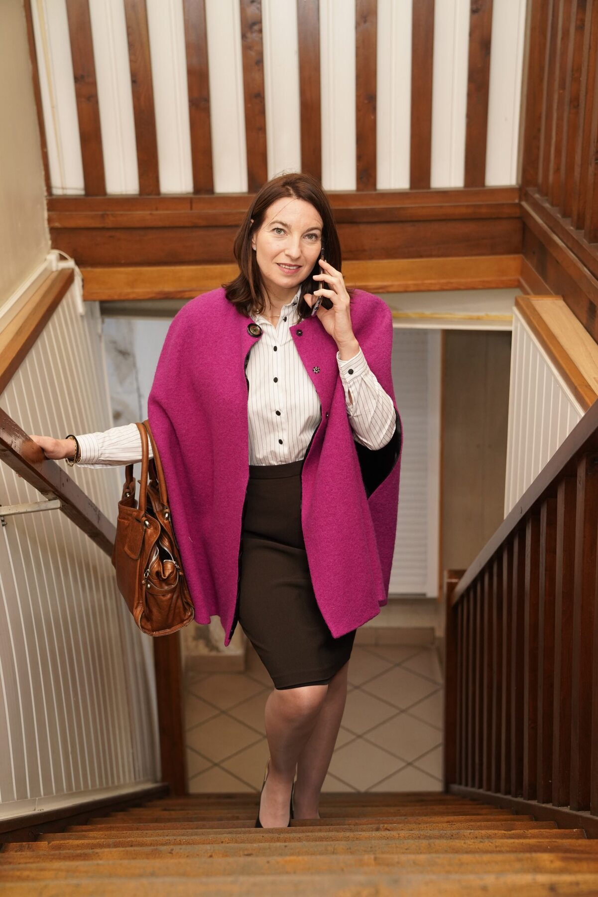
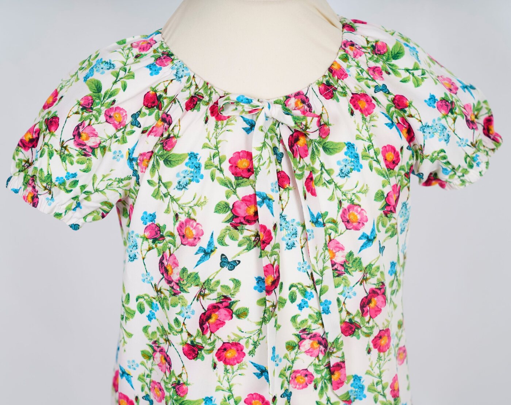

Faty Style
Atelier de couture, haute couture et retouches à Limay
Créations sur mesure, robes de mariage, robes de soirée, retouches, accessoires et initiation couture.
À propos
Un atelier artisanal au service de vos envies
Créée en 2003, Faty Style accompagne les projets de robe de mariage, robe de soirée, vêtement sur mesure, retouche et accessoire textile. Fatima Abajjane met son expérience d’artisan couturière au service de pièces uniques, pensées pour votre style et votre silhouette.
Découvrir l’offre

Univers
Ce que propose l’atelier
Un aperçu clair des demandes les plus fréquentes avant de découvrir le détail en présentation.

Retouches
Mariage & cérémonie

Accessoires

Enfants

Initiation couture
Créations
Vraies créations Faty Style
Un aperçu maîtrisé de pièces réelles réalisées par l’atelier. La galerie détaillée se trouve dans la page Présentation.
Robes de mariageCréation réelle Faty Style
Ensembles & vestesCréation réelle Faty Style

Robes de soiréeCréation réelle Faty Style

Nœuds papillonCréation réelle Faty Style

TabliersCréation réelle Faty Style

Sacs porte-platCréation réelle Faty Style
L’Atelier des PetitsCréation réelle Faty Style
Retouches / transformationsCréation réelle Faty Style
Confiance
Pourquoi choisir Faty Style ?
Créations uniques
Chaque pièce part d’un besoin réel, d’une silhouette et d’une occasion.
Travail artisanal
Les détails, ajustements et finitions sont réalisés avec exigence.
Ajustement personnalisé
L’atelier accompagne les essayages pour obtenir un tombé juste.
Atelier local à Limay
Une adresse de proximité dans les Yvelines, accessible sur rendez-vous.